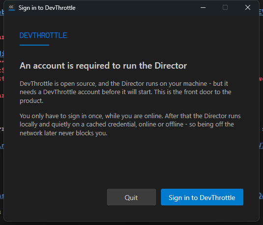
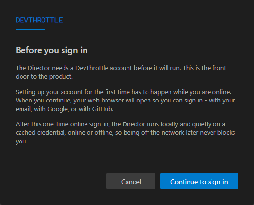

Release Notes. The first launch of the Director now drives a system-browser sign-in.
From the startup account gate (issue #580), "Sign in to DevThrottle" first shows a one-time first-run
explanation (an account is required, and first-time setup must be online), then opens the user's
default web browser at the DevThrottle sign-in address. The Director runs a loopback listener on
127.0.0.1 that captures the credential the sign-in completion hands back, stores it
through the credential store (issue #583), clears the gate, and shows the main window with no
restart. After this one-time online sign-in the Director runs locally on the cached credential,
online or offline.
src/CcDirector.Core/Account/LoopbackLoginListener.cs (new) - loopback
HttpListener bound to 127.0.0.1 on an OS-assigned ephemeral port
(security rule DT-07), captures the access-plus-refresh pair from the sign-in completion's
callback, fails loud on a half-credential, never logs token values (DT-05).src/CcDirector.Core/Account/FirstRunLoginCoordinator.cs (new) - opens the system
browser at the sign-in address (carrying the loopback callback as redirect_uri),
awaits the hand-back, and stores it through DevThrottleAccountService (#583);
returns a user-safe result rather than throwing on expected failure/cancel.src/CcDirector.Avalonia/FirstRunLoginDialog.axaml(.cs) (new) - the first-run
explanation shown before login.src/CcDirector.Avalonia/AccountGateScreen.axaml(.cs) - the Sign in action now drives
the explanation -> coordinator -> proceed flow, with a busy/error status line.src/CcDirector.Avalonia/App.axaml.cs - exposes the credential service and adds
ShowMainWindow / ProceedToMainWindowAfterLogin so the gate clears to
the main window in-process (no restart).src/CcDirector.Core.Tests/Account/{FirstRunLoginCoordinatorTests,LoopbackLoginListenerTests}.cs
(new) - 7 unit tests, all passing.docs/cencon/architecture_manifest.yaml - new components recorded under
avalonia_ui and core_services.| Criterion | Expected | Actual (proof) | Result |
|---|---|---|---|
| Log in opens the system browser at the expected sign-in address | Browser launches at the DevThrottle sign-in URL (screenshot or log line) | Log: [FirstRunLoginCoordinator] launching system browser at https://devthrottle.com/signin?redirect_uri=...127.0.0.1:54050... and [BrowserLauncher] OpenSystemDefault. Gate screenshot below. |
PASS |
| Credential captured, stored through #583, gate cleared, main window shown, no restart | Window after hand-back + capture log line | Log: [LoopbackLoginListener] credential captured -> [DevThrottleAccountService] StoreTokens: stored -> [AccountGateScreen] First-run login succeeded -> [CcDirector] Main window shown (account gate passed), all within the same process (no restart). See director-log-first-login.txt. |
PASS |
| First-run explanation (account required, first setup must be online) shown before login | Screenshot of the explanation | Screenshot 02-first-run-explanation.png below; shown before the browser launch. |
PASS |
| Re-running the installer / applying an update does not clear the credential or force re-login | Credential present, run update, still present, Director starts without the gate | Credential stored at %LOCALAPPDATA%\cc-director\config\director\devthrottle-credential.bin (DPAPI, 422 bytes) - a per-user path outside the install directory an update replaces. After a relaunch: [AccountGatePolicy] Decide: loggedIn=True, decision=Start -> Main window shown, no AccountGateScreen line. See restart section of the log file. |
PASS |


The visual main-window screenshot could not be captured because the interactive
desktop became locked during the proof run (Windows CopyFromScreen returns "handle is
invalid" on a locked desktop). The issue lists the capture log line as an accepted verification for
this criterion, and the full sequence is captured deterministically in the log below.
[FirstRunLoginCoordinator] RunAsync: launching system browser at https://devthrottle.com/signin?redirect_uri=http%3A%2F%2F127.0.0.1%3A54050%2Fdevthrottle-login-callback%2F [LoopbackLoginListener] WaitForCredentialAsync: awaiting the browser sign-in hand-back [LoopbackLoginListener] WaitForCredentialAsync: credential captured from the browser hand-back [DevThrottleAccountService] StoreTokens: stored [AccountGateScreen] First-run login succeeded: clearing the gate and showing the main window [CcDirector] First-run login complete: clearing the account gate and showing the main window (no restart) [CcDirector] Main window shown (account gate passed); starting background session validation next == RESTART (credential present, no re-login) == [AccountGatePolicy] Decide: evaluating startup gate (local check, no network call) [DevThrottleAccountService] IsLoggedIn: valid=True, expiredButWellFormed=False, result=True (no network call) [AccountGatePolicy] Decide: loggedIn=True, decision=Start [CcDirector] Main window shown (account gate passed); starting background session validation next
Full log: director-log-first-login.txt in this folder.
New components recorded in docs/cencon/architecture_manifest.yaml under
avalonia_ui (FirstRunLoginDialog; expanded AccountGateScreen)
and core_services (FirstRunLoginCoordinator / LoopbackLoginListener).
No security drift: the loopback listener binds 127.0.0.1 only on an ephemeral port
(consistent with DT-07's loopback trust boundary) and never logs token values (DT-05). No new
blocking security rule is introduced.
dotnet build cc-director.sln: Build succeeded, 0 Warnings, 0 Errors. New tests:
7 passed, 0 failed (FirstRunLoginCoordinatorTests, LoopbackLoginListenerTests).
I believe this is finished.